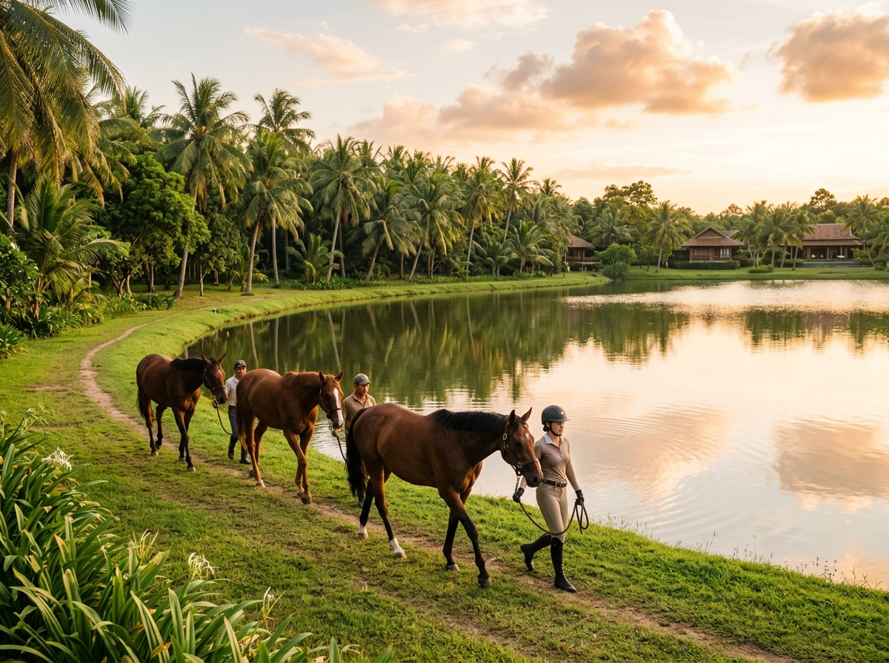

Điểm Nhấn Tiện Ích Độc Bản Việt Mã Viên:
- Trải nghiệm cưỡi ngựa giữa cánh đồng lúa độc nhất vô nhị: Cung đường phi ngựa ven bờ hồ 100ha và cánh đồng lúa chín vàng 2.5km, tạo nên chất sống tự do, kiêu hãnh và lãng mạn.
- Cơ sở vật chất chuẩn Equestrian quốc tế: Sân tập và biểu diễn 2.000m² nền cát thạch anh giảm chấn, chuồng trại Stables 5 sao thông gió tự nhiên, khu Grooming spa chăm sóc ngựa chuyên nghiệp.
- Đàn ngựa thuần chủng tuyển chọn: Ngựa được huấn luyện điềm tĩnh, an toàn tuyệt đối cho trẻ em từ 6 tuổi, thanh thiếu niên và quý cô, quý ông doanh nhân.
- Học viện Kỵ mã nhí & Khóa học Doanh nhân: Rèn luyện tư thế thẳng lưng kiêu hãnh, sự thăng bằng, lòng dũng cảm và xây dựng sự thấu cảm, kiên định cho thế hệ kế thừa.

Việt Mã Viên (The Equestrian Estate) — Biểu tượng tiện ích quý tộc kiêu hãnh giữa miền xanh sinh thái Saigon Farm Resort.
1. Ý Tưởng Kiến Tạo: Khi Bộ Môn Thể Thao Hoàng Gia Đặt Chân Giữa Đồng Lúa Việt
Từ thời xa xưa tại các nước phương Tây, môn cưỡi ngựa (Equestrianism) luôn được tôn vinh là 'Môn thể thao của các vị vua' (The Sport of Kings) — biểu tượng tối thượng của quyền lực, phong thái đĩnh đạc và tinh thần chinh phục tự do của giới quý tộc.
Tại Saigon Farm Resort, chủ đầu tư đã táo bạo hiện thực hóa một ý tưởng độc bản chưa từng có tại Việt Nam: Đưa câu lạc bộ cưỡi ngựa chuẩn quý tộc đặt trọn vẹn vào giữa bức tranh đồng quê thanh bình. Hãy tưởng tượng buổi sớm mai hay lúc chiều tà, bạn khoác lên mình bộ trang phục kỵ mã bốt da thanh lịch, thong dong thả dây cương cùng tuấn mã sải bước qua những bờ lúa trĩu hạt chín vàng, nghe tiếng lúa xào xạc hòa cùng tiếng vó ngựa gõ nhịp bên mặt hồ 100ha lộng gió. Đó là một trải nghiệm vừa sang trọng tột bậc, vừa gắn kết sâu sắc với sự mộc mạc nguyên sơ của đất trời.
2. Quy Mô Đầu Tư & Cơ Sở Vật Chất Tiêu Chuẩn Quốc Tế
Để đảm bảo an toàn tuyệt đối và trải nghiệm chuẩn mực cho cộng đồng cư dân tinh hoa, Việt Mã Viên được xây dựng với hệ thống hạ tầng đồng bộ và chuyên nghiệp:
1. Sân Cưỡi Ngựa Biểu Diễn 2.000m²
Sân tập khép kín rộng rãi với nền phủ cát thạch anh mịn chuyên dụng nhập khẩu dày 15cm, có tính đàn hồi cao giúp bảo vệ gân móng ngựa và giảm chấn thương cho kỵ sĩ. Hệ thống hàng rào gỗ mộc cổ điển và khán đài Pavilion có mái che phục vụ người thân ngồi thưởng trà ngắm nhìn.
2. Tuyến Đường Phi Ngựa Sinh Thái 2.5km
Tuyến đường chuyên dụng dài 2.5km uốn lượn ven mặt hồ 100ha, đan xen giữa cánh đồng lúa hữu cơ và vườn cây ăn trái bản địa. Đây là cung đường độc quyền để các kỵ sĩ trải nghiệm cảm giác nước kiệu (trot) và phi nước đại (canter) giữa thiên nhiên khoáng đạt.
3. Khu Chuồng Trại Stables 5 Sao
Thiết kế thông thoáng tự nhiên với mái ngói cao cách nhiệt, hệ thống quạt thông gió và khử mùi sinh học. Sàn lót rơm và dăm gỗ thông sạch sẽ, máng nước uống tự động, chế độ ăn cỏ tươi hữu cơ kết hợp cám dinh dưỡng và yến mạch nhập khẩu.
4. Khu Grooming & Spa Chăm Sóc Ngựa
Khu vực tắm rửa, chải lông, cắt tỉa bờm và chăm sóc móng ngựa chuyên nghiệp. Đội ngũ bác sĩ thú y túc trực thăm khám sức khỏe định kỳ, đảm bảo đàn ngựa luôn trong thể trạng sung mãn và phong thái oai vệ nhất.

Trải nghiệm cưỡi ngựa thực tế — Nơi con người và tuấn mã hòa nhịp cùng đất trời phương Nam.
3. Học Viện Kỵ Mã & Các Chương Trình Trải Nghiệm Đa Tầng
Được vận hành bởi đội ngũ huấn luyện viên kỵ mã chuyên nghiệp của MDS Living, Việt Mã Viên mang đến các khóa trải nghiệm phong phú:
🏇 1. Học Viện Nài Ngựa Nhí (Junior Equestrian Academy) — Dành Cho Trẻ Từ 6 Tuổi
Đây là hoạt động được yêu thích nhất của các gia đình có con nhỏ. Trẻ không chỉ học kỹ thuật cưỡi ngựa mà còn được học cách tự tay chải lông, cho ngựa ăn cà rốt, vuốt ve bờm ngựa và học cách giao tiếp không lời với một sinh vật to lớn. Hoạt động này mang lại 4 lợi ích vàng:
- Chỉnh dáng đi thẳng lưng quý tộc: Khắc phục triệt để tật gù lưng và cúi đầu do sử dụng điện thoại, tạo dựng phong thái đĩnh đạc tự tin.
- Rèn luyện lòng dũng cảm: Vượt qua nỗi sợ độ cao để ngồi vững vàng trên lưng tuấn mã.
- Xây dựng tinh thần thấu cảm: Học cách lắng nghe và tôn trọng bạn đồng hành động vật.
🏇 2. Khóa Huấn Luyện Kỵ Mã Doanh Nhân (Gentleman & Lady Riders)
Dành cho các chủ nhân điền trang yêu thích phong cách sống quý tộc: Thành thục các kỹ thuật điều khiển cương, đi nước kiệu, phi nước đại và tham gia các cuộc diễu hành câu lạc bộ cuối tuần. Đây cũng là không gian giao lưu đẳng cấp giữa những người cùng tầng lớp tinh hoa.
🏇 3. Dịch Vụ Chụp Ảnh Nghệ Thuật Cổ Điển (Equestrian Photo Session)
Dịch vụ chụp ảnh chuyên nghiệp với tuấn mã bên cánh đồng lúa, đầm sen và hoàng hôn hồ 100ha. Cung cấp đầy đủ trang phục kỵ mã cổ điển, mũ bảo hiểm quý tộc, bốt da cao cấp phục vụ những bộ ảnh triệu view cho gia đình và khách lưu trú.
4. Bảng Các Gói Trải Nghiệm & Khóa Học Tại Việt Mã Viên

Không gian thảo nguyên rộng mở ôm trọn hồ sinh thái 100ha — Địa hình lý tưởng để phát triển câu lạc bộ cưỡi ngựa quý tộc.
5. Giá Trị Khác Biệt Nâng Tầm Đẳng Cấp Điền Trang Saigon Farm Resort
Sự hiện diện của Việt Mã Viên chính là lời khẳng định mạnh mẽ cho triết lý đầu tư khác biệt và tâm huyết của chủ đầu tư: Không chỉ xây dựng những ngôi nhà đẹp, mà kiến tạo nên một phong cách sống kiêu hãnh, tự do và trường tồn.
Đối với du khách lưu trú, đây là điểm nhấn trải nghiệm không thể nào quên. Đối với chủ nhân sở hữu điền trang, đây là niềm tự hào vô giá khi mời bạn bè, đối tác về thăm tư gia và cùng nhau cưỡi ngựa thưởng ngoạn non nước hữu tình giữa lòng quê hương Việt Nam.
Trải Nghiệm Cưỡi Ngựa Quý Tộc Tại Việt Mã Viên
Đăng ký nhận vé mời trải nghiệm cưỡi ngựa thực tế, tham quan chuồng trại Stables 5 sao và khám phá các căn biệt thự điền trang Saigon Farm Resort.
Xem Bản Đề Xuất & Trải Nghiệm Việt Mã Viên